Lista de tickets e um formulário solto (Assunto, Vídeo, Mensagem). Sem tema, sem número visível, conversa numa página separada.
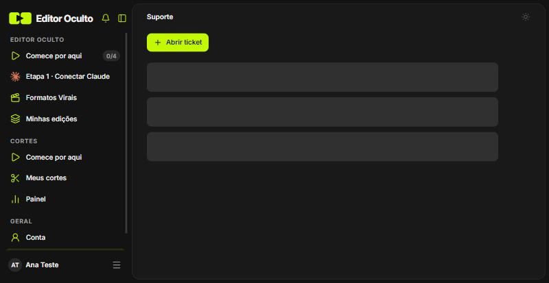
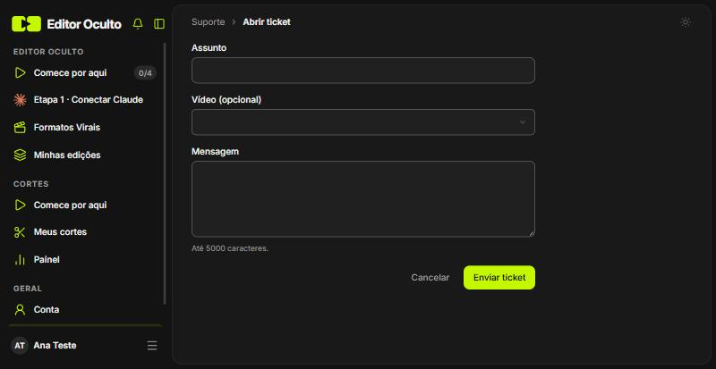
Igual ao protótipo, refinado: conversas à esquerda (tema, número, situação, ponto de resposta nova) e a conversa aberta à direita, com o botão Resolvido no topo e a resposta embaixo. Nova conversa abre no mesmo painel: tema primeiro, depois assunto, vídeo e mensagem.
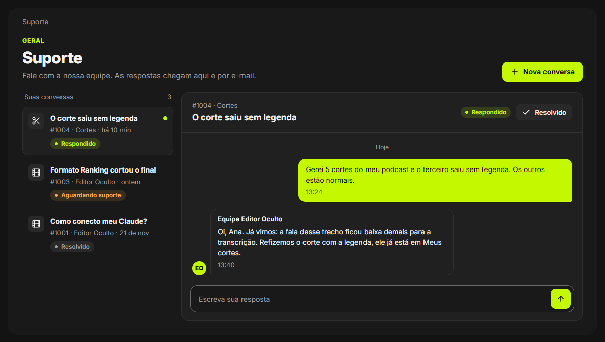
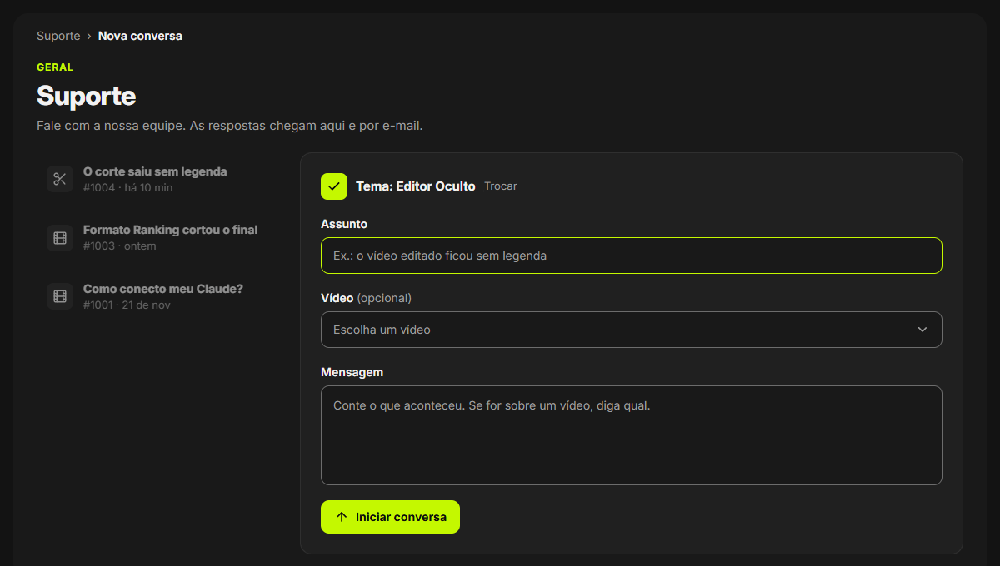
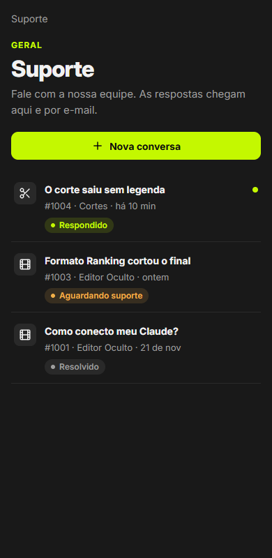
A página começa por "Como podemos ajudar?" com as duas áreas como portas (escolher a área já inicia a conversa). Abaixo, as conversas numa tabela com busca. Cada conversa abre em página própria, como uma linha do tempo, com o vídeo citado e o prazo de resposta.
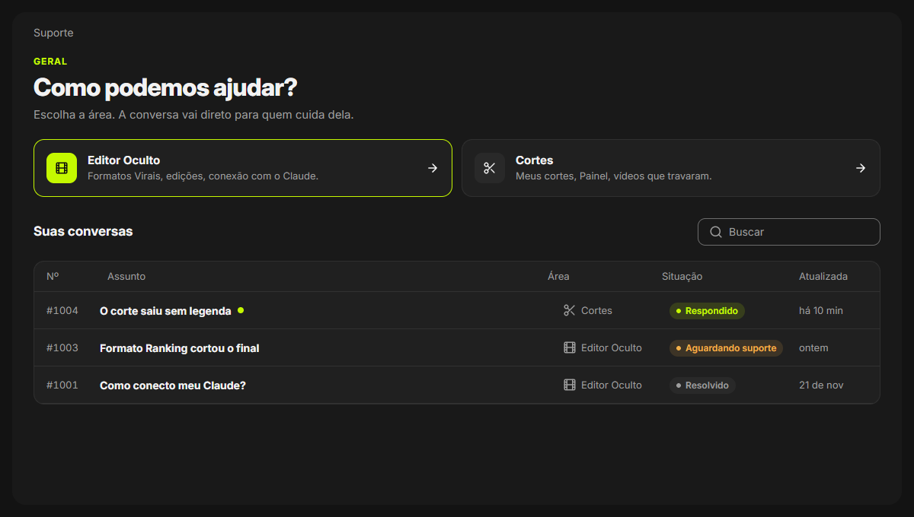
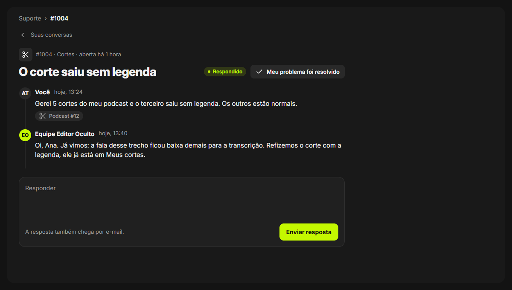
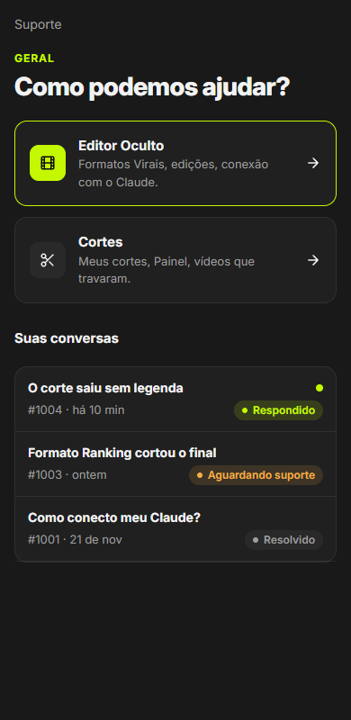
Uma coluna de chat, como um mensageiro. As conversas ficam num seletor no topo. Começar uma conversa é o próprio campo de mensagem, com o tema em chips e o vídeo anexado. Depois da resposta, a pergunta "Resolveu?" aparece na conversa.
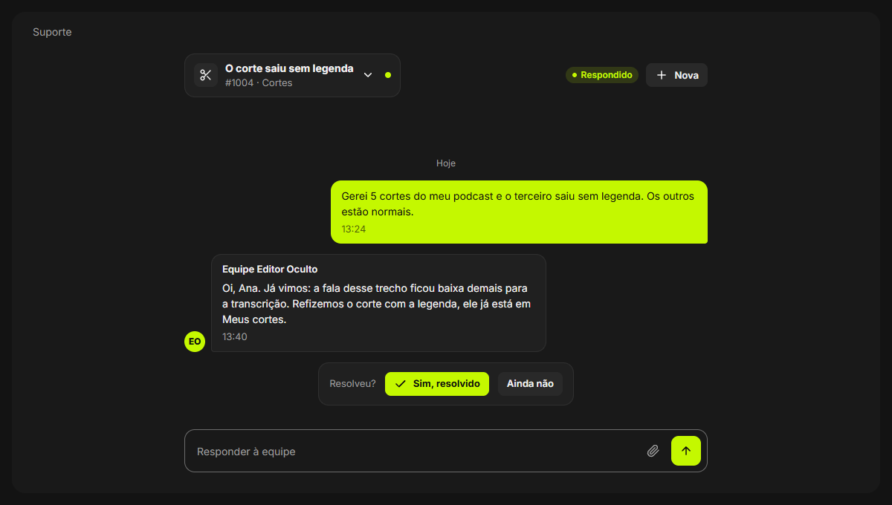
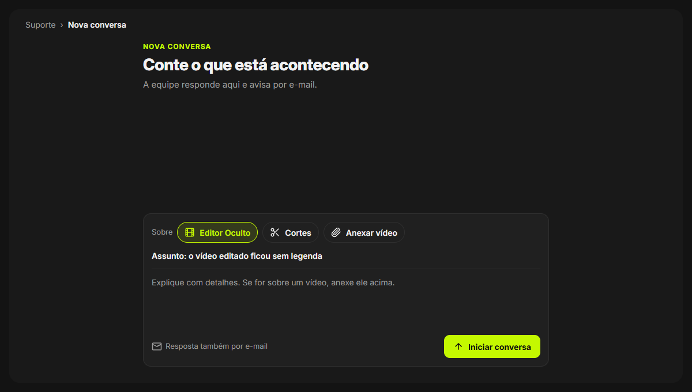
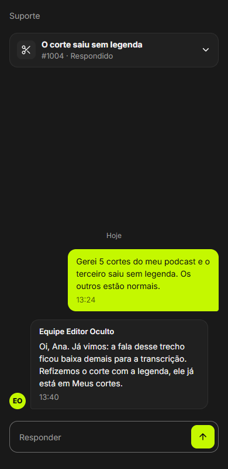